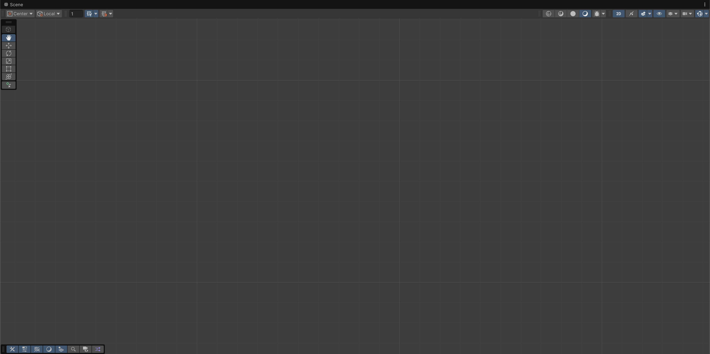
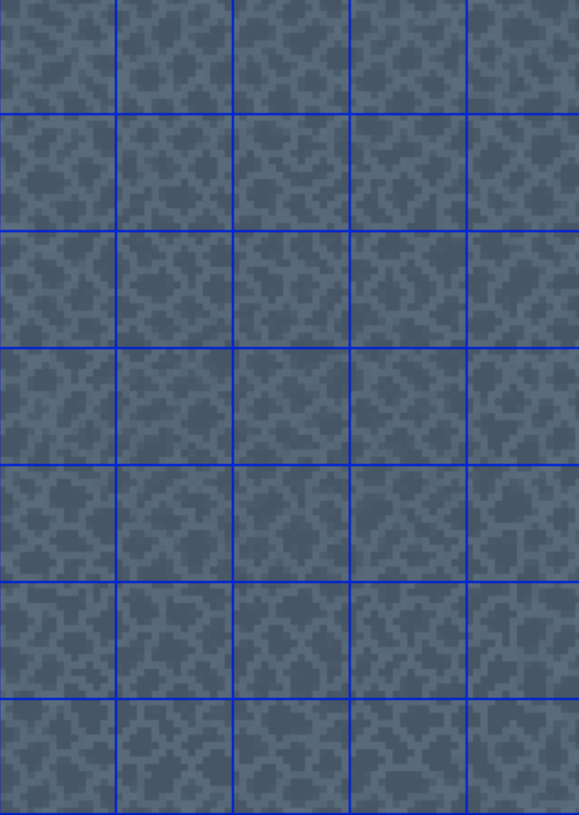
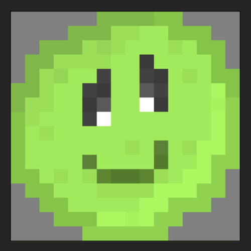

I started working on SlimeShot in September 2025 after having an idea for an angry birds inspired platformer.
I chose to go for a 2D pixel art style to give the game a retro arcade look. Beginning this project got me really excited to eventually have a fully finished game
with enough levels and level themes to keep players interested for at least a couple of hours.
This page shows off my progress so far and documents the different steps I took to
get a few playable levels working.
Blank Unity Scene
I decided to use LibreSprite to create the pixel art for my tile textures. Each tile in the game is 16 by 16 pixels large giving a simplistic look to every sprite. Below is the castle background texture. The most time-consuming part was getting the edges to line up with each other, allowing the texture to seamlessly repeat. This texture is made up of thirty-five 16 by 16 pixel squares, represented by the gridlines in the image.
You play as a happy slime character. Because of the slimy surface, you stick to any wall you touch. To control the character you pull back your mouse in the opposite direction of where you want to travel. The further you pull back, the higher your power is. When you let go you are then slung through the air to wherever you aimed at. The objective is to reach the top of the castle in each level as quickly as possible. Levels ramp up in difficulty, adding in more complex mechanics like moving hazards, and rising lava.
Spikes can be found on any ground, wall, or ceiling surface. If you touch them you die instantly and have to restart the level.
As levels get more tricky, fireballs are introduced.